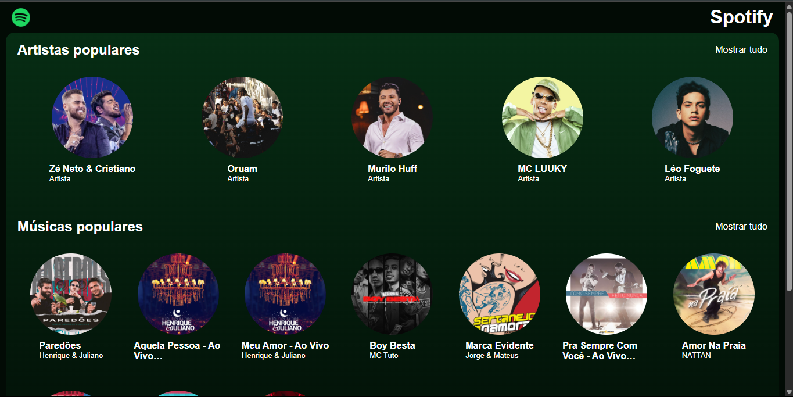
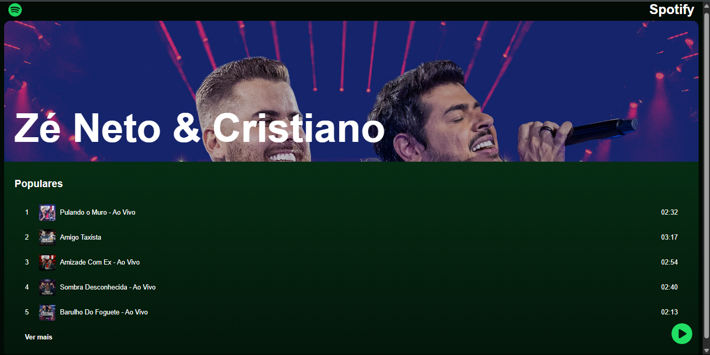
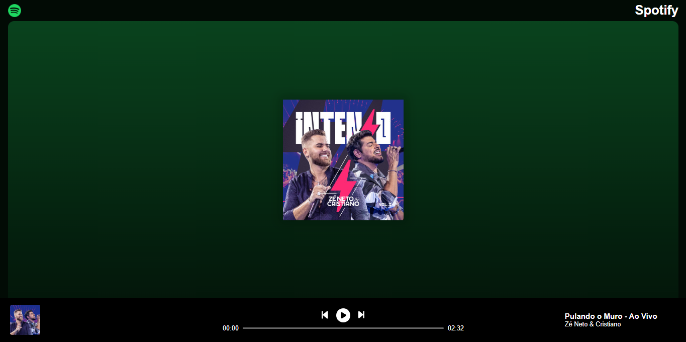
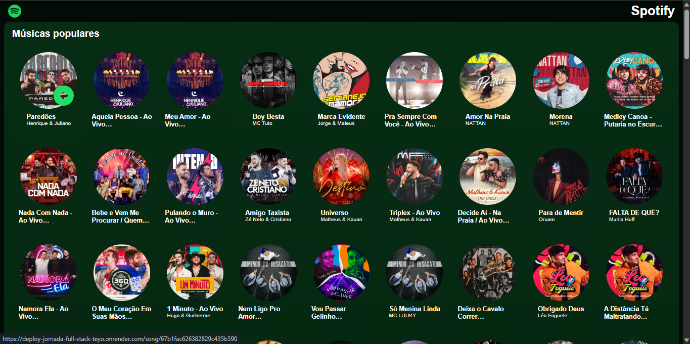
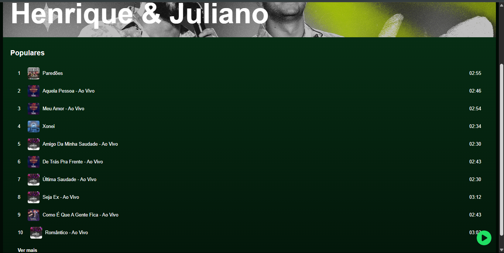
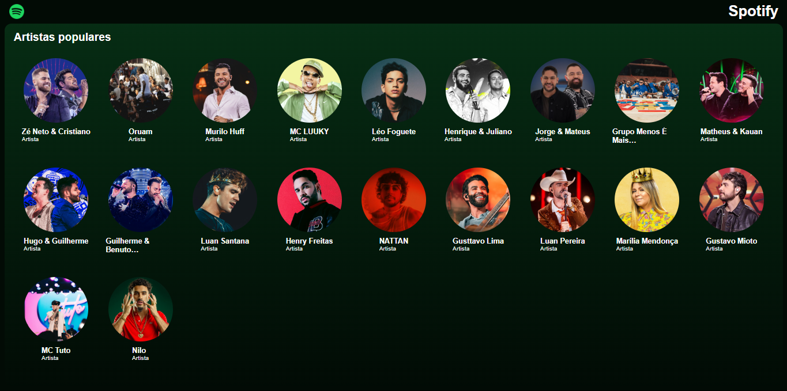

Clone do Spotify
Recriação do visual do Spotify com HTML, CSS e JavaScript
Essa página simula o layout do Spotify com fidelidade ao design original. Foram usados conceitos de responsividade, organização por sessões, e criação de cards de artistas e playlists, com destaque para os efeitos visuais e interações simples de botão e hover.





